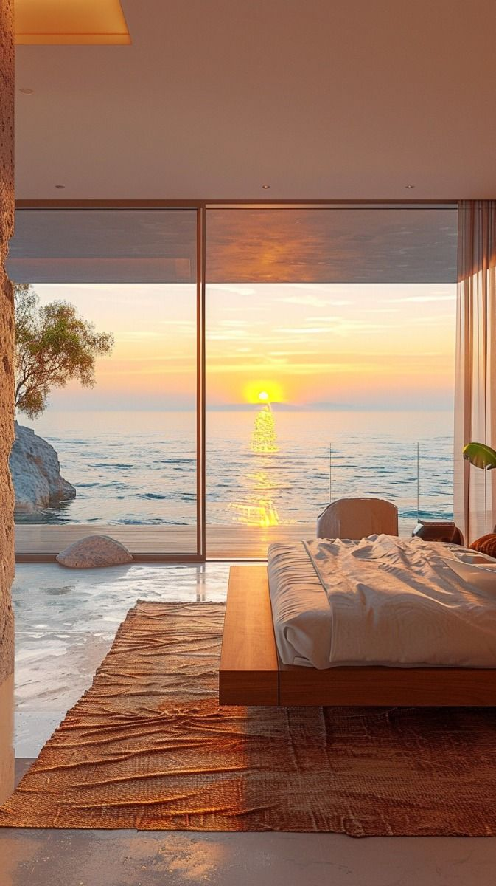
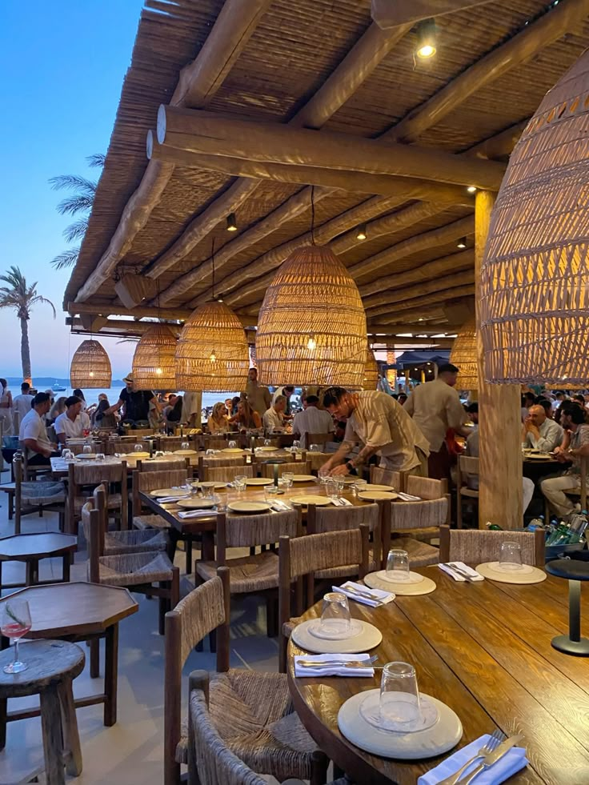
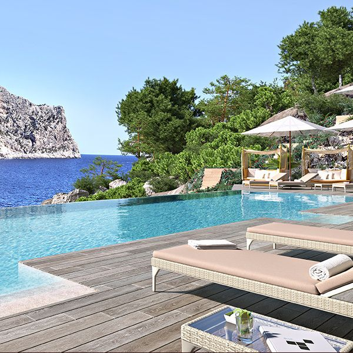

Servicios
- 1. Habitaciones Con Vista al Mar: Espacios amplios y modernos, diseñados para brindarte la máxima comodidad y con vistas espectaculares del océano, asegurando una experiencia de descanso inigualable

- 2. Restaurante y Bar: Disfruta de una experiencia gastronómica única con una oferta de platos locales e internacionales, todo acompañado de una vista impresionante del mar.

- 3. Piscina al Aire Libre: Relájate y disfruta de momentos de tranquilidad en nuestra piscina con vista directa al océano, el lugar perfecto para descansar y desconectar.
